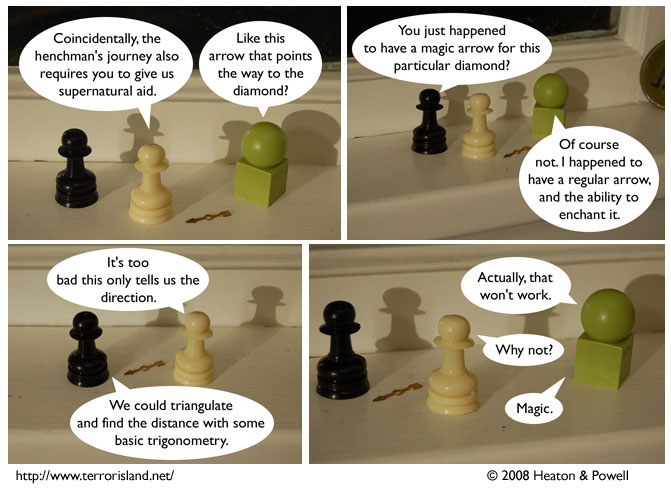

Strip #316
— Wednesday, June 18, 2008
Don’t mess with magic.
Notes, Thoughts, &c.
Ben’s Notes
Wikipedia has some useful information about triangulation, but fails to warn that it won’t work with magic arrows.
Lewis’s Notes
Before you complain that ‘magic’ isn’t a good answer for why triangulation won’t work with the arrow, ask yourself why you would accept ‘magic’ as a good answer to the question of why it would be able to point at the location of the diamond, when ordinary arrows don’t point at the location of the diamond.